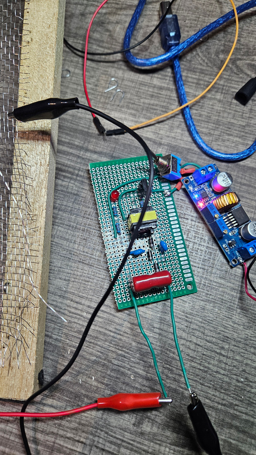
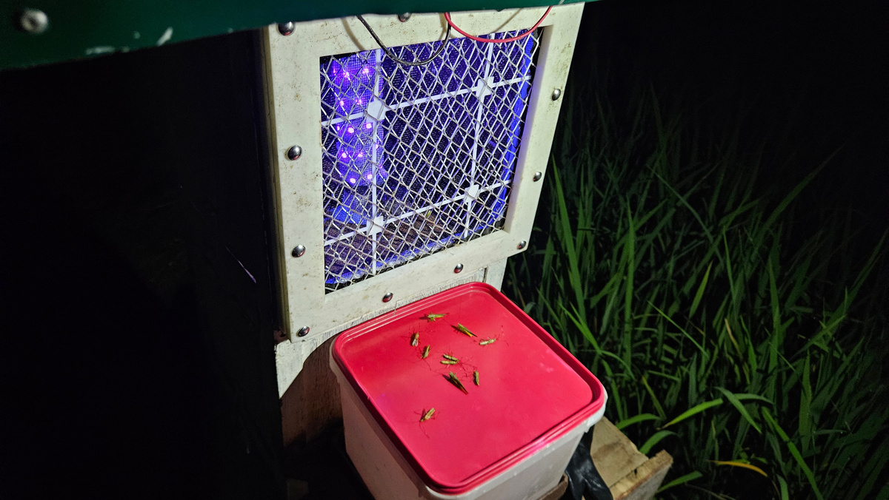
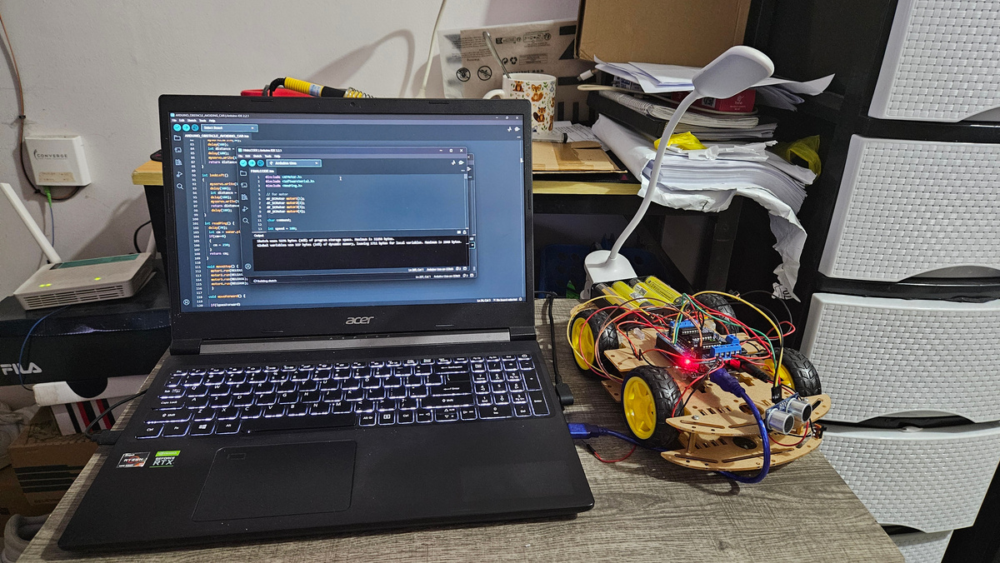
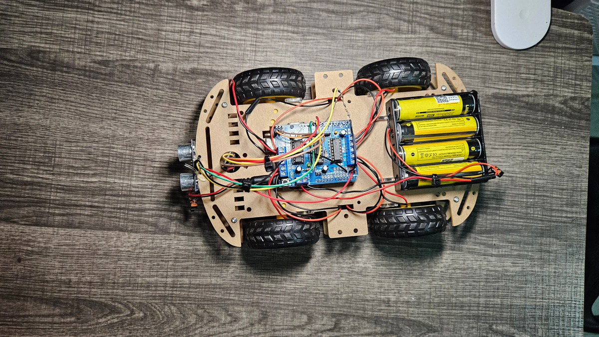

AI-Based Rice Pest Detection and Elimination System
AI-powered rice pest detection and elimination system using Raspberry Pi, YOLO, and embedded sensor integration.
Raspberry PiYOLOEmbedded AIPersonal Portfolio
Electronics Engineer | Robotics | AI | Embedded Systems | Automation
Building intelligent real-world systems through hardware and software integration.

About Me
Licensed Electronics Engineer (ECE) and Electronics Technician (ECT) with foundations in automation, embedded systems, robotics, and industrial technologies. Experienced in electronics development, troubleshooting, system integration, and AI-based engineering projects. Possesses international academic exposure from South Korea and strong interest in industrial automation, technical support, and engineering solutions.
Featured Work


AI-powered rice pest detection and elimination system using Raspberry Pi, YOLO, and embedded sensor integration.
Raspberry PiYOLOEmbedded AI


Wearable drowning detection and emergency response system using ESP32 and physiological sensors.
ESP32IoTSensor Fusion


Developed a mini elevator prototype simulating real elevator functions using sensors and motors for pulley and door operations, powered by PLC, HMI, and Arduino systems.
PLCHMIArduino



Programmed a ROS-powered Yahboom Transbot in South Korea for checkered pattern detection and developed an Arduino-powered mobile robot with Bluetooth control, obstacle avoidance, and go-to-goal navigation.
ROSArduinoRobotics

Developed an IoT-based embedded system that converts hand gestures into text messages through a Raspberry Pi camera.
IoTRaspberry PiComputer Vision


Developed a wireless transmitter for analog signal transmission, prototyped on a breadboard and fabricated on a PCB.
PCBAnalogElectronics

Developed a speaker amplifier circuit applying BJT-based signal amplification principles.
BJTAmplifierElectronics


Completed foundational robotics laboratory projects involving relays, LEDs, ultrasonic sensors, LCDs, LUX sensors, IR sensors, and motor control systems.
SensorsMotor ControlArduinoExperience Timeline
BJT circuits, clippers, clampers, oscilloscopes, and signal analysis.
Assembly programming, LED matrix control, Arduino, sensors, and PCB fabrication.
Mobile robots, ROS, PLC, HMI, SCADA, VFD motor control, and pneumatic systems.
Computer vision, IoT, Raspberry Pi, ESP32, and AI-based engineering prototypes.

Programmed assembly code on the MTS-88 to display shapes on an LED matrix.

Performed BJT circuit experiments using training boards and oscilloscopes to analyze signals and apply clipper and clamper circuit principles.

Gained hands-on experience in PLC programming, HMI, SCADA, VFD motor control, solenoid valves, pneumatic cylinders, industrial lamps, and buzzers.

Performed communications systems experiments using TIMS modules with oscilloscope analysis of AM and FM signals.

Utilized Edibon software to analyze and interpret antenna radiation patterns.
Skills
Arduino, ESP32, Raspberry Pi, sensors, wireless telemetry
PLC, HMI, SCADA, VFD motor control, ladder logic
YOLO, computer vision, Raspberry Pi camera systems
BJT amplifiers, PCB fabrication, oscilloscopes, analog circuits
Certifications
Passed the March 2026 Electronics Engineering (ECE) and Electronics Technician (ECT) Licensure Examinations and obtained PRC license.
Achieved a B2 Upper Intermediate proficiency level with a TOEIC score of 940 in Listening and Reading, and 370 in Speaking and Writing.
Contact
I would be glad to discuss upcoming opportunities or collaboration.